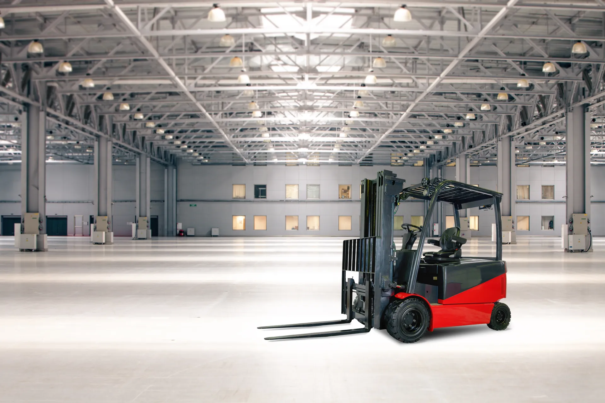
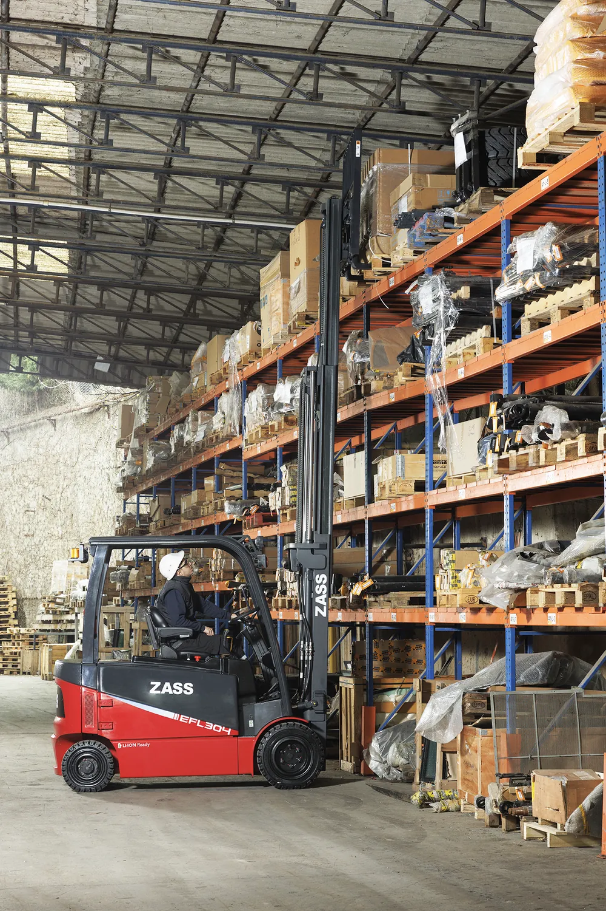
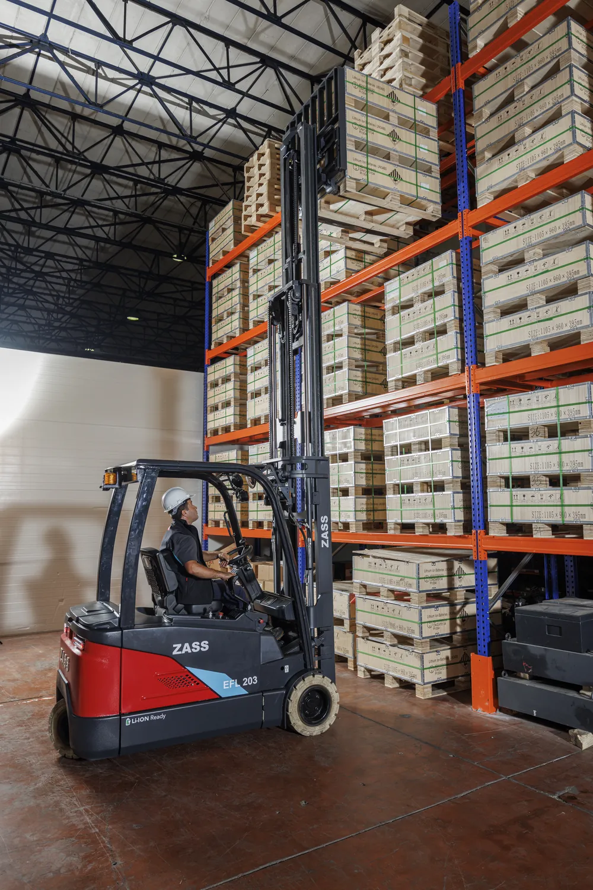
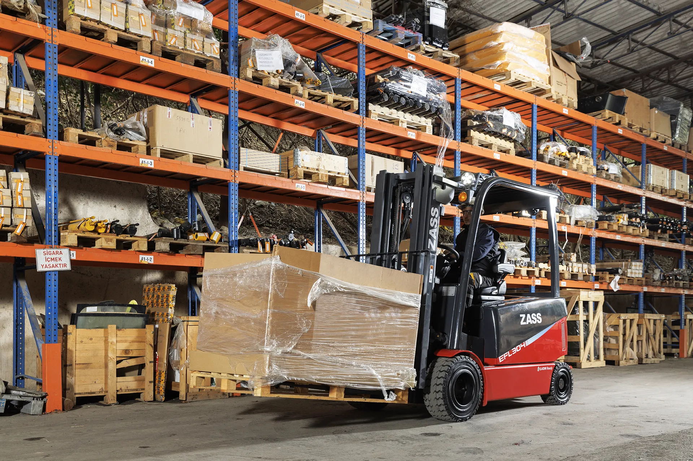
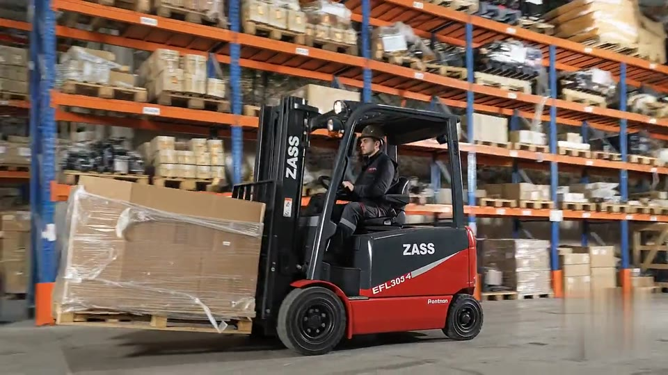
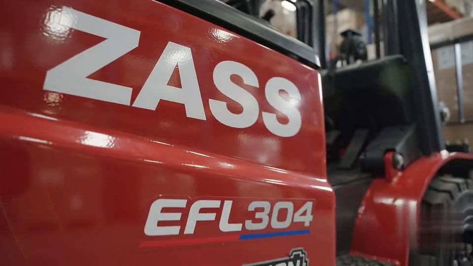

Large-Scale Distribution
Monitor 500+ forklifts across multiple facilities from one dashboard — with per-site benchmarking.
ExploreNext-Generation Fleet Intelligence
OmniTrace Global turns your ZASS electric forklift fleet into a connected, self-reporting ecosystem — battery health, vehicle diagnostics, driver behaviour and predictive maintenance, from one command center.
MODULE 01 — POSITIONING
Every vehicle, every second, on one live map. Sub-meter indoor positioning, drag-and-drop geofences and instant zone-breach alerts.
MODULE 02 — ENERGY
Cell-level voltage, thermal profiling and AI-powered degradation forecasting. Know the true health of every pack — before it costs you a shift.
MODULE 03 — DATA
The OT-1 hub listens to every controller on the vehicle network — motor current, hydraulic pressure, lift height, steering angle — decoded and streamed live.
MODULE 04 — DIAGNOSTICS
Every diagnostic trouble code, decoded into plain language with severity, timestamp and a recommended action — pushed to your team the second it happens.
MODULE 05 — CONTROL · ZASS EXCLUSIVE
Push driver-specific vehicle behaviour over the air — speed limits, lift profiles, regen intensity — bound to RFID identity. Exclusive to ZASS vehicles.
MODULE 06 — ANALYTICS
Shift reports, utilization heatmaps and energy intelligence — benchmarked across your entire fleet and delivered before your morning coffee.
ROI Calculator
Drag the slider — savings are estimated from real OmniTrace fleet averages: energy optimization, prevented faults and recovered operating hours.
* Estimate — varies with fleet profile and shift patterns. Request a demo for an exact model.
Live Preview
This map is a live simulation of the real Telemetry dashboard. Like it? Explore the full thing with the demo account.
DEMO · OT-DEMO01 / zass2026
Open the Live DashboardIn the Field
From empty hangars to packed high-bay aisles — every ZASS truck on OmniTrace, reporting in real time.




In Motion


How It Works
A 15-minute installation stands between your fleet and complete operational intelligence.
STEP 01 — HARDWARE
The OT-1 clips onto the ZASS vehicle's CAN port under the overhead guard. No wiring harness surgery, no downtime — 15 minutes per vehicle, tools included.
STEP 02 — ACQUISITION
The unit reads every frame on the vehicle network — battery, motors, hydraulics, steering — sampling 200+ parameters continuously without touching vehicle behaviour.
STEP 03 — TRANSMISSION
4G/LTE uplink wrapped in TLS 1.3, payloads encrypted with AES-256. Telemetry lands in the OmniTrace cloud in under 200 milliseconds — anywhere on earth.
STEP 04 — INTELLIGENCE
Live maps, battery DNA, fault feeds and OTA control — rendered at 120fps in the Telemetry dashboard, with alerts that find you before problems find your fleet.
THE DEVICE
Built for the harshest industrial environments.
Engineered for the most demanding data requirements.
| Dimensions | 85 × 55 × 18 mm |
| Weight | 120 g |
| Power input | 9–60 V DC |
| Battery backup | 96 h |
| Connectivity | LTE Cat-M1 · NB-IoT · 4G fallback |
| Positioning | GPS · GLONASS · Galileo + indoor beacons |
| Vehicle bus | CAN 2.0B · J1939 · ZASS native |
| Protection | IP67 · −40 °C to +85 °C |
| Security | AES-256 · TLS 1.3 · secure boot |
| Certifications | CE · FCC · UKCA · E-Mark |
Solutions
Five industries. One intelligence layer. Drag to explore.
Monitor 500+ forklifts across multiple facilities from one dashboard — with per-site benchmarking.
ExploreBattery chemistry tracking in -30°C storage with thermal alerts before capacity collapses.
ExploreReal-time quay positioning for reach stackers and empty handlers — in salt, heat and dust.
ExploreLean floor optimization with zero-downtime predictive maintenance on line-feeding fleets.
ExploreHACCP-compliant zone management with hygiene-grade operational logging, audit-ready.
ExploreAbout Us
OmniTrace Global started with a single question: why can't a fleet manager know the true state of every truck, instantly? Today our OT-1 platform for ZASS electric forklifts brings every signal — from battery chemistry to driver behaviour — into one command center.
Our engineers come from power electronics, CAN networking and fleet operations — we speak the language of the teams who actually drive the floor.
Official telemetry partnership signed with ZASS; first OT-1 prototype on a truck.
Production OT-1 and the Telemetry platform go live — first 100 vehicles connected in 6 weeks.
Expansion into cold chain and port operations; the 1,000th vehicle activated in İzmir.
Today we are the intelligence layer for fleets in 11 countries, at a 99.97% uptime SLA.
Comparison
| Capability | Classic GPS tracker | OmniTrace OT-1 |
|---|---|---|
| Live location | ✓ | ✓ |
| Sub-meter indoor positioning | ✕ | ✓ |
| Cell-level battery data | ✕ | ✓ |
| CAN bus — 200+ parameters | ✕ | ✓ |
| DTC decoding + recommended action | ✕ | ✓ |
| OTA driver parameters | ✕ | ✓ |
| Predictive maintenance (ML) | ✕ | ✓ |
| Offline buffering | Limited | 72h |
| Installation time | 1–2 hours | 15 min |
Pricing
Every plan includes OT-1 hardware, installation and unlimited users.
UP TO 10 VEHICLES
UP TO 50 VEHICLES
UNLIMITED · MULTI-SITE
FAQ
Join the companies that have already unlocked complete visibility into their ZASS forklift fleets. Get started in minutes.